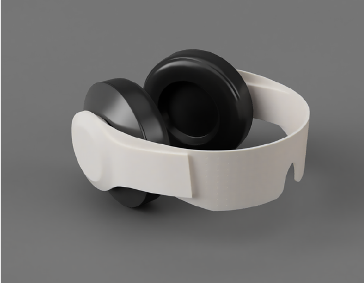
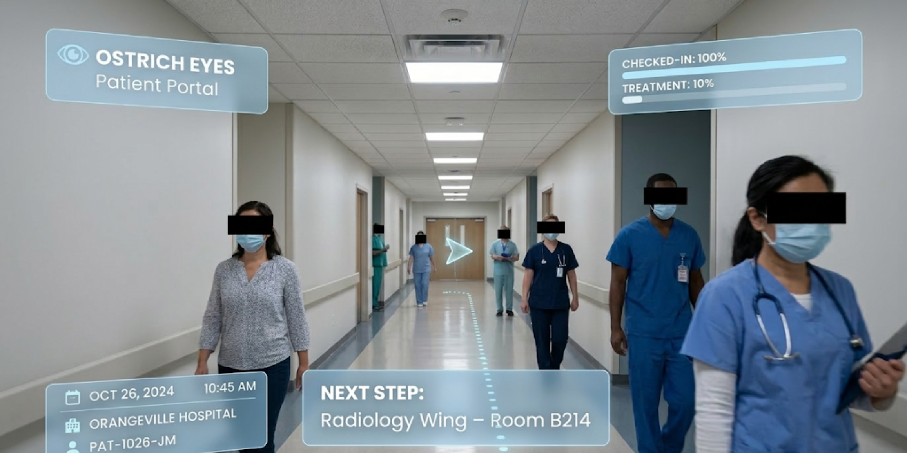
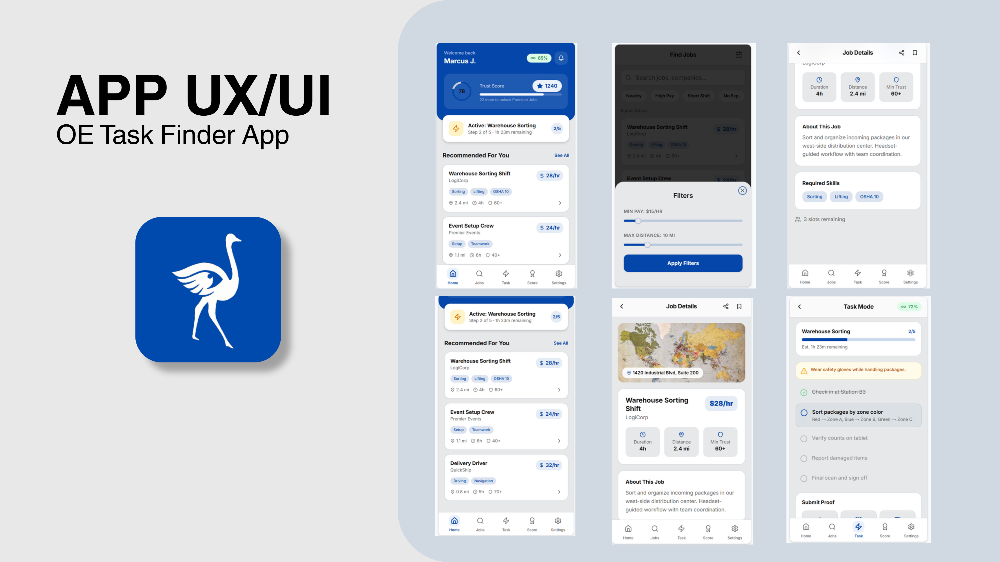
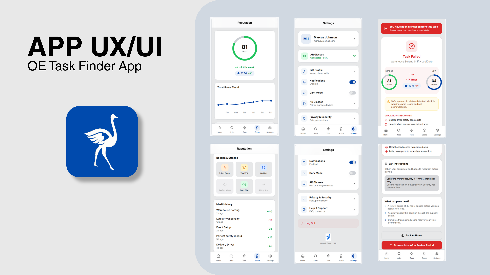

A speculative privacy headset for a 2033 future where work has gone fully task-based, and where staying anonymous has become the safer way to live.
OstrichEyes imagines a future where work has shifted from long-term careers to purely task-based gigs, and where AI-driven data collection has eroded privacy so far that people find more comfort in anonymity than in being seen. The premise is grounded in cited real-world signals rather than pure invention: a 2025 Stanford AI Index report's finding of a 56% surge in AI privacy incidents, and labour-market research pointing toward an increasingly task-based economy.
Inside that world, OstrichEyes, founded in 2033, is a privacy-and-assistance company selling a headset that conceals a worker's identity and the identities of the people around them while guiding them through each job.

We put the headset through a real physical iteration before landing on its final form: an early prototype started from a 3D-printed sunglasses base, hand-modified with side blinders, over-ear headphones cut from parts sourced at Dollarama, and black electrical tape. We chose black deliberately, per our own notes, as "the most lonely colour," to emphasize isolation.

Our final concept resolved into three connected pieces: the headset itself (an AR lens overlay that censors the identifying features of other workers on-site), a Data Upload Terminal for consent and task onboarding, and a companion Task Finder app. We built the HUD overlay, the piece that sets this project apart from a straight product render, as an animated sequence layered over hospital-hallway footage, showing live task, patient, and location metadata alongside a real-time progress bar.
Alongside the headset and its HUD, the third piece of the concept is the companion app that actually distributes work: task-workers browse and accept jobs, track a live trust score, and get flagged if a task is dismissed for a safety violation. These are the interface screens I designed for it.


The Task Finder app is built out as a working prototype, not just static screens. Try it below: browse jobs, open one, and step through the flow yourself.
Our closing reflection frames the project as a synthesis exercise: "all our explorations had come together to produce one speculative future which was built up by strong signaling from the STEEP-V, and each of our pathways acting as a piece in the larger speculative future." Mid-process, we also raised our own central risk rather than glossing over it, a genuine open question about whether the object or the premise was doing the real work: "is OstrichEyes doing too much? Maybe our scenario deals too much with the glasses which make the shift, and not the shift which results in the glasses."
My own account of my role: "I acted as a key member in developing the app interfaces, ensuring all deliverables were met before submissions, was a key role in the video development, printed the 3D models, and worked out the details and validity of each of the iterations throughout this project."